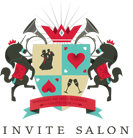

Invite Salon
Marriages are made in heaven
We Design Beautiful Invites for Weddings.
Invites with a personality. Invites that tell a story. Invites that you and your guests will absolutely love!
Unique Invites, No Templates
A heady blend of Photography, Illustrations and Typography!
Beautifully Designed, Brilliantly Produced
Designed by Artists, not the printer's DTP guy!
Poetic, Witty and Warm
Written by Professionals, not the same guy who writes obituaries!
Team Page
Once you’ve decided on the date, venue and the spouse be sure we are the first to hear about it.